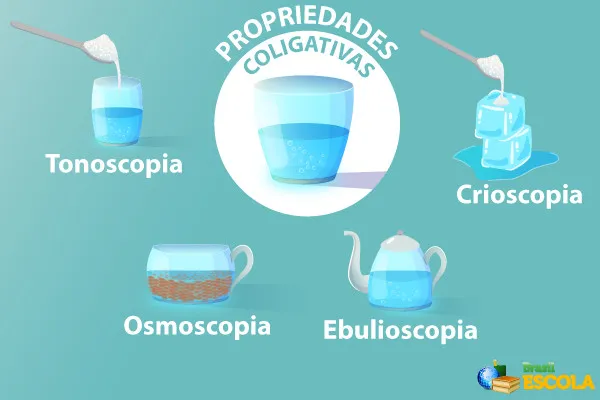

https://brasilescola.uol.com.br/quimica/propriedade-coligativa.htm
Propriedades Coligativas
Por que adicionar sal à água altera sua temperatura de congelamento? Por que o uso de determinados solutos pode elevar a temperatura de ebulição de um líquido? E como a água consegue atravessar uma membrana que separa duas soluções de concentrações diferentes?
Esses fenômenos estão relacionados às propriedades coligativas, que descrevem alterações em determinadas propriedades de um solvente provocadas pela presença de partículas de soluto dissolvidas.
1. O que são propriedades coligativas?
As propriedades coligativas são alterações nas propriedades físicas de um solvente causadas pela adição de um soluto não volátil, especialmente quando comparamos o solvente puro com uma solução em condições equivalentes.
Em soluções diluídas ideais, essas alterações dependem principalmente da quantidade de partículas de soluto presentes, e não diretamente da identidade química dessas partículas.
Por exemplo, duas soluções com a mesma quantidade efetiva de partículas dissolvidas por quantidade de solvente podem apresentar efeitos coligativos semelhantes, mesmo que tenham sido preparadas com substâncias diferentes.
Entretanto, é importante lembrar que o comportamento real das soluções também depende de fatores como a natureza das substâncias, a concentração e as interações entre as partículas.
2. Por que as propriedades coligativas acontecem?
Para compreender esses fenômenos, precisamos considerar o comportamento das partículas do solvente e do soluto.
Em um solvente puro, as partículas interagem entre si e apresentam determinada tendência a passar para a fase gasosa. Quando um soluto não volátil é dissolvido, as partículas de soluto alteram o comportamento do solvente e reduzem sua tendência de escapar para a fase gasosa.
Essa alteração ajuda a explicar duas consequências importantes:
- A pressão de vapor do solvente diminui.
- Em condições apropriadas, a solução passa a congelar em uma temperatura menor e a entrar em ebulição em uma temperatura maior do que o solvente puro.
Esses efeitos são estudados por meio de quatro propriedades coligativas clássicas: tonoscopia, ebulioscopia, crioscopia e osmose.
3. Tonoscopia
A tonoscopia estuda a diminuição da pressão de vapor de um solvente quando um soluto não volátil é dissolvido nele.
A pressão de vapor é a pressão exercida pelo vapor de uma substância quando ele está em equilíbrio com sua fase líquida, em determinada temperatura.
Quando adicionamos um soluto não volátil à água, a proporção de moléculas de água na superfície da solução diminui em relação à água pura. Como consequência, a tendência de escape das moléculas de água para a fase gasosa é reduzida, diminuindo a pressão de vapor do solvente.
Em soluções ideais, esse comportamento pode ser descrito pela lei de Raoult:
Psolvente = Xsolvente × P0solvente
Em que:
- Psolvente: pressão de vapor do solvente na solução.
- Xsolvente: fração molar do solvente.
- P0solvente: pressão de vapor do solvente puro na mesma temperatura.
A fração molar representa a proporção da quantidade de matéria de um componente em relação à quantidade total de matéria da mistura.
Para uma solução ideal com um soluto não volátil, a pressão de vapor do solvente é menor do que a do solvente puro na mesma temperatura.
Exemplo: ao dissolver açúcar em água, a pressão de vapor da água diminui em comparação com a água pura, considerando a mesma temperatura.
4. Ebulioscopia
A ebulioscopia estuda a elevação da temperatura de ebulição de um solvente provocada pela dissolução de um soluto não volátil.
Um líquido entra em ebulição quando sua pressão de vapor se iguala à pressão externa. Como a adição do soluto reduz a pressão de vapor do solvente, é necessário aquecer a solução a uma temperatura mais elevada para que essa igualdade seja atingida, considerando as condições usuais de uma solução com soluto não volátil.
Por isso, uma solução pode apresentar temperatura de ebulição maior que a do solvente puro.
Para soluções diluídas, podemos representar a elevação ebulioscópica por:
ΔTe = Ke × m
Em que:
- ΔTe: elevação da temperatura de ebulição.
- Ke: constante ebulioscópica do solvente.
- m: molalidade da solução, expressa em mol de soluto por quilograma de solvente, em uma aproximação para soluções diluídas.
Quando o soluto se dissocia em vários íons ou produz mais de uma partícula por unidade de soluto, o número efetivo de partículas também deve ser considerado em uma descrição mais completa.
Exemplo: uma solução aquosa de sal pode apresentar temperatura de ebulição ligeiramente superior à da água pura sob a mesma pressão externa.
Esse efeito não significa que adicionar sal fará a água ferver imediatamente. O aumento da temperatura de ebulição depende da concentração e, em soluções domésticas, costuma ser pequeno.
5. Crioscopia
A crioscopia estuda a diminuição da temperatura de congelamento de um solvente quando um soluto é dissolvido nele.
A presença de partículas de soluto interfere na formação da estrutura ordenada do sólido. Assim, em condições usuais, a solução precisa atingir uma temperatura mais baixa do que o solvente puro para começar a congelar.
Para soluções diluídas, a diminuição crioscópica pode ser expressa por:
ΔTc = Kc × m
Em que:
- ΔTc: diminuição da temperatura de congelamento.
- Kc: constante crioscópica do solvente.
- m: molalidade da solução.
A temperatura de congelamento da solução pode ser obtida subtraindo-se a diminuição crioscópica da temperatura de congelamento do solvente puro:
Tcongelamento da solução = Tcongelamento do solvente puro - ΔTc
Exemplo cotidiano: em regiões muito frias, determinadas soluções são utilizadas para reduzir a temperatura de congelamento de líquidos. Em sistemas de refrigeração de automóveis, por exemplo, aditivos apropriados ajudam a proteger o líquido de arrefecimento contra o congelamento e também podem elevar sua temperatura de ebulição.
Outro exemplo é a utilização de sal em misturas de gelo para obter temperaturas inferiores à temperatura de congelamento da água pura. O resultado depende das quantidades e das condições do sistema.
6. Osmose
A osmose é o movimento espontâneo do solvente através de uma membrana semipermeável, de uma região com menor concentração efetiva de soluto para outra com maior concentração efetiva de soluto, quando a membrana permite a passagem do solvente, mas restringe a passagem do soluto.
Esse movimento ocorre devido à diferença no potencial químico do solvente entre os dois lados da membrana. Em termos escolares, podemos compreender a osmose como o deslocamento do solvente em direção ao lado em que sua disponibilidade é menor devido à presença do soluto.
Observe que, na osmose, quem atravessa a membrana é o solvente, e não necessariamente o soluto.
6.1. Exemplo com uma membrana semipermeável
Imagine dois compartimentos separados por uma membrana que permite a passagem de água, mas não de um soluto dissolvido:
- Um compartimento contém água pura.
- O outro contém uma solução aquosa de açúcar.
Inicialmente, existe uma diferença de potencial químico da água entre os compartimentos. Por isso, a água tende a atravessar a membrana em direção à solução açucarada.
O movimento líquido continua até que as condições de equilíbrio sejam atingidas, considerando os efeitos da pressão e da composição dos dois lados.
6.2. Pressão osmótica
A pressão osmótica é a pressão que precisa ser aplicada à solução para impedir o fluxo líquido de solvente através de uma membrana semipermeável, nas condições consideradas.
Para soluções diluídas, a pressão osmótica pode ser aproximada pela equação de van 't Hoff:
π = i × C × R × T
Em que:
- π: pressão osmótica.
- i: fator de van 't Hoff, relacionado ao número efetivo de partículas produzidas pelo soluto.
- C: concentração molar da solução.
- R: constante dos gases apropriada às unidades utilizadas.
- T: temperatura absoluta, em kelvin (K).
Em soluções diluídas de solutos que não se dissociam nem se associam significativamente, o fator i pode ser aproximado por 1. Para eletrólitos, como muitos sais dissolvidos em água, o número efetivo de partículas pode ser maior, embora as interações entre os íons façam com que o comportamento real nem sempre corresponda ao valor ideal.
7. Osmose no cotidiano e nos seres vivos
A osmose possui aplicações importantes na Biologia, na indústria alimentícia e no tratamento de água.
7.1. Conservação de alimentos
Ao adicionar grandes quantidades de sal a determinados alimentos, o meio ao redor dos microrganismos pode se tornar muito concentrado. Isso favorece a saída de água de suas células por osmose e dificulta o crescimento de muitos microrganismos.
Esse princípio contribui para a conservação de alimentos, embora a eficácia dependa também de fatores como a concentração de sal, a temperatura, o tipo de alimento e o microrganismo envolvido.
7.2. Células e soluções
As células possuem membranas que permitem a passagem de água e regulam o transporte de diversas substâncias. Quando uma célula é colocada em meios com concentrações efetivas de solutos diferentes, a movimentação de água pode alterar seu volume.
- Meio hipotônico: apresenta menor concentração efetiva de solutos não penetrantes em comparação com o interior da célula. A água tende a entrar na célula.
- Meio hipertônico: apresenta maior concentração efetiva de solutos não penetrantes em comparação com o interior da célula. A água tende a sair da célula.
- Meio isotônico: apresenta condições osmóticas equivalentes às do interior da célula. Não há fluxo líquido de água causado por uma diferença osmótica efetiva.
Esses termos são relativos: para classificar um meio, precisamos compará-lo com outro.
7.3. Osmose reversa
A osmose reversa ocorre quando uma pressão externa suficientemente elevada é aplicada ao lado mais concentrado de uma solução, forçando o solvente a atravessar uma membrana semipermeável no sentido contrário ao fluxo osmótico natural.
Esse processo é utilizado em sistemas de dessalinização e purificação de água. A membrana permite a passagem preferencial da água e retém grande parte dos sais dissolvidos e de outras substâncias, dependendo das características do sistema.
8. Comparação entre as quatro propriedades coligativas
- Tonoscopia: diminuição da pressão de vapor do solvente.
- Ebulioscopia: elevação da temperatura de ebulição.
- Crioscopia: diminuição da temperatura de congelamento.
- Osmose: movimento do solvente através de uma membrana semipermeável devido a uma diferença de potencial químico.
As quatro propriedades ajudam a compreender como a presença de solutos altera o comportamento físico de um solvente. Em soluções diluídas ideais, os efeitos coligativos dependem principalmente da quantidade efetiva de partículas dissolvidas.
Resumo
- Propriedades coligativas são alterações físicas associadas à presença de partículas de soluto em um solvente.
- A tonoscopia estuda a diminuição da pressão de vapor.
- A ebulioscopia estuda a elevação da temperatura de ebulição.
- A crioscopia estuda a diminuição da temperatura de congelamento.
- A osmose é o movimento do solvente através de uma membrana semipermeável.
- A pressão osmótica está relacionada à pressão necessária para impedir o fluxo líquido de solvente.
- As aplicações incluem sistemas de refrigeração, conservação de alimentos, processos celulares e purificação de água.
Exercícios de fixação
1. Explique o que são propriedades coligativas e por que elas dependem da quantidade efetiva de partículas dissolvidas.
2. O que é pressão de vapor e como a dissolução de um soluto não volátil costuma alterá-la?
3. Diferencie tonoscopia, ebulioscopia e crioscopia.
4. Explique por que uma solução aquosa com um soluto não volátil geralmente apresenta temperatura de ebulição maior e temperatura de congelamento menor do que a água pura.
5. Uma solução ideal apresenta concentração de partículas duas vezes maior que outra solução do mesmo solvente, em condições comparáveis. Qual é a tendência dos efeitos coligativos em relação à solução menos concentrada?
6. Defina osmose e explique qual componente atravessa a membrana semipermeável nesse processo.
7. Uma célula é colocada em um meio hipertônico. Em que direção a água tende a se movimentar? Explique.
8. Explique como a osmose reversa pode ser utilizada na dessalinização da água.
9. Qual é a diferença entre pressão osmótica e pressão de vapor?
10. Relacione cada fenômeno à propriedade coligativa correspondente:
- Diminuição da temperatura de congelamento de uma solução.
- Redução da pressão de vapor de um solvente.
- Elevação da temperatura de ebulição de uma solução.
- Passagem de água por uma membrana semipermeável em direção à solução mais concentrada em soluto efetivo.
O conteúdo dessa página foi gerado por IA pois a Moderna PLUS não se aprofunda aos conceitos de base.
Fontes consultadas e complementares: